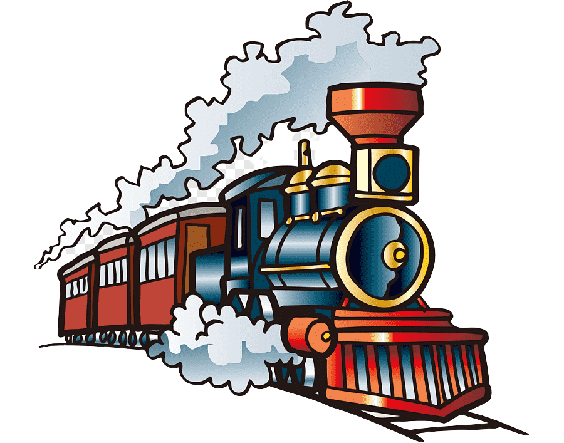
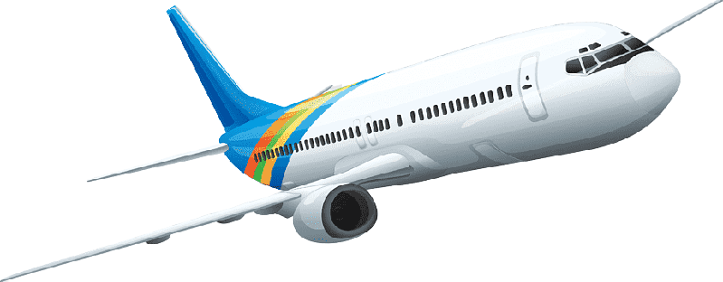

How to Get There?

By Road
Gondal is about 40 km from Rajkot. Gondal is 60km from Junagadh making it a convenient base to visit this historic city by bus.

By Train
Gondal is about 42km from Rajkot railway station.

By Air
Gondal is about 41km from Rajkot Airport.